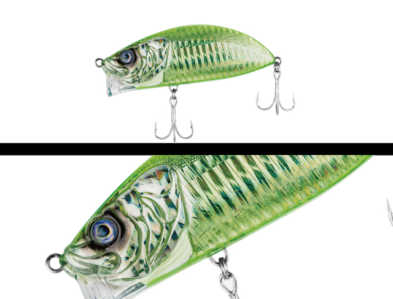
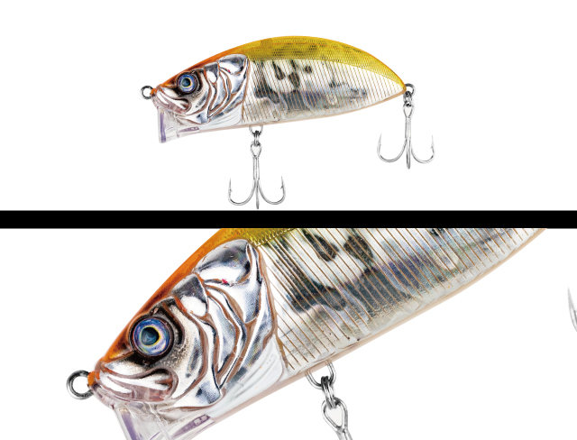
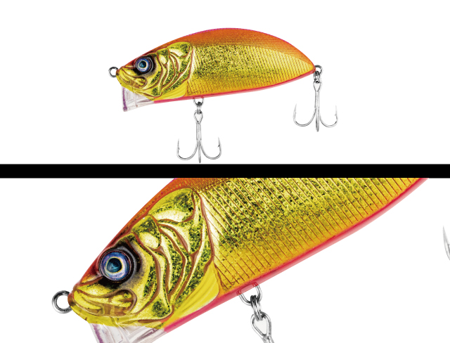
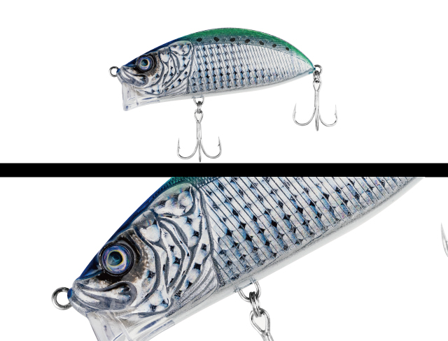

フィーリー
（FEELY）
フィーリーはADUSTA（アダスタ）のソルトクランクです。
「楽しい」を形にしたソルトクランク。ボディは長さがない代わりにファットでボリュームがあり、しっかりしたアクションで存在感は抜群です。かわいい見た目とは裏腹に、強い水押しで大きな魚を呼び寄せます。サーフ、リバー、ボートとさまざまな場面で使えます。

画像出典:ADUSTA公式HP
スペック
- メーカー
- ADUSTA（アダスタ）
- タイプ
- ソルトクランク（シンキング）
- 全長
- 85mm
- 自重
- 35g
- 飛距離
- MAX70m
- 重心
- 重心移動（直径10mmスチールボール×2）
- ターゲット
- シーバス・青物・フラットフィッシュなど
- 価格
- 2,200円（税込）
▼今すぐチェック

フィーリーの特徴
かわいい見た目で、強い水押しと遠投性を両立したソルトクランク
-
ファットボディの強い水押し
長さがない代わりにファットでボリュームのあるボディで、しっかりしたアクションと強い水押しを出し、大きな魚を呼び寄せます。
-
シャロー対応リップ＋シンキング設定
リップはシャロー対応型ですが、シンキング設定なのでカウントダウンでオールレンジを探れます。
-
ファットボディなのにロングキャスト
空力を考えたボディ形状と、ルアーサイズに対して大きめの直径10mmスチールボール×2の重心移動で、MAX70mの遠投性を実現しています。
フィーリーの使い方
基本はただ巻き。ファットボディの強い水押しを感じながら巻いてきます。
シンキングなので、カウントダウンで沈めるレンジを変えれば、シャローから少し深いレンジまで1つで探れます。
フィーリーの得意な状況
サーフ、リバー、ボートなど、さまざまな場面。強い水押しでアピールしたいときや、ほかのミノーやシンペンで反応がないときのローテーションに向いています。
ワンポイント
クランクらしい強い水押しは、濁りがあるときや波のあるサーフでも存在感を出しやすいのが強みです。ミノーで反応が薄いときに、波動の違うルアーとして投げてみてください。
強い水押しで誘うルアーの使い分け
| モデル | 全長／自重 | 得意な場面 |
|---|---|---|
| フィーリー | 85mm／35g | ソルトクランク。ファットボディの水押しとオールレンジ（本記事のモデル） |
| ベイルーフ バルク95F | 95mm／14g | フラットサイドのリップレスミノー。シャローを水押しで |
| ゼルファス133F | 133mm／29g | 同じADUSTAのフローティングミノー。巻き速度でアクションを変えられる |
同じ「水押し」で誘うルアーでも、クランクのフィーリーはシンキングでレンジを選べるのが特徴。シャローを浮かせて引くならバルク、ミノーで広く探るならゼルファスと使い分けましょう。
人気カラー
全7色の中から4色を紹介します（画像は公式サイトのカラー一覧の並び順から判断しています）。

132 MEROMERO MERONメロン系のグリーンカラー。濁りや明るい時間帯に目立たせたいときに。

136 HARAGURO ORANGEオレンジ系のアピールカラー。

142 PINK JOKERゴールドとピンクのアピールカラー。

153 UV SARDINEイワシを意識したナチュラル系のカラー。
画像出典:ADUSTA公式HP
フィーリーに似ているルアー
-
 ベイルーフ バルク95F
DUO
詳細はこちら＞
ベイルーフ バルク95F
DUO
詳細はこちら＞
全長95mm・自重14gのフラットサイドリップレスミノー。強い水押しで、シャローを浮かせて引きたいときに。
-
 ゼルファス133F
ADUSTA
詳細はこちら＞
ゼルファス133F
ADUSTA
詳細はこちら＞
同じADUSTAのフローティングミノー。巻き速度でアクションを変えたいときに。
-
 シャロール126F-SSR
DAIWA
詳細はこちら＞
シャロール126F-SSR
DAIWA
詳細はこちら＞
全長126mm・自重22gのシャローランナー。シャローを広く探りたいときに。